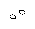
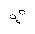

The first universality proof, presented in Winning Ways (see Alan Hensel's bibliography), was based on the construction of a counter memory. A counter memory stores an integer that can be incremented, decremented, and tested for equality to zero. In the Life implementation, the counter value is stored as the position of a block, and can (in principle) be incremented and decremented using a block pusher and a block puller, respectively. There is probably no way to fit these two patterns together to build a counter memory, but Dean Hickerson constructed a functioning sliding block memory using a different design.
A counter stores an integer of unbounded size and can thus encode arbitrarily many bits. These can be extracted using some clever techniques involving several counters at once (hint: think of how to divide an integer by two and get the remainder just by incrementing and decrementing counters). However, using counters to simulate tape on a Turing machine introduces an exponential slowdown. A delay-line memory, by contrast, can simulate a Turing tape with only polynomial slowdown, making it more practical (if the word has any meaning at all in this context). Interestingly, one of the first computers built in real life, the EDSAC, used a delay-line memory, consisting of a tank of mercury through which ultrasonic pulses were recirculated.
In Life, a delay line stores a sequence of bits by endlessly recirculating a stream of gliders or spaceships. Many finite delay-line constructions have been designed, such as a pseudorandom glider gun that generates a very complicated-looking sequence of gliders by XORing contents of the delay line and recirculating them. The pattern described here is more powerful, because it allows the delay line to be lengthened by the finite control. This makes it possible to increase the size of storage as needed.
Specifically, they pass in  but react in  .
In the second case, the two spaceships mutually annihilate, leaving the eater intact. (They also produce a northeast glider, which is incidental, but potentially useful in a construction.) If the rightward spaceship were not there, however, then the leftward spaceship would continue through. We assume there is always a leftward spaceship, so the result is to reflect the rightward stream to the left, but with inverted logic. For example, the following reflects and inverts a stream in which the third out of four spaceships is missing:
To construct a recirculating loop in this way, we place an eater at the right end of the loop, and another at the left end so that the reaction is rotated 180 degrees and reflects the leftward stream to the right. This also inverts the logic a second time, restoring the stream to positive logic. The result is that between the two eaters, bits are recirculated, provided that synchronized MWSS streams enter at the left and right ends. The number of bits in the loop is controlled by the distance between the two eaters. At any instant, about half the bits are stored in the rightward stream in positive logic, while the other half are stored in the leftward stream in negative logic.
So far, this works for an arbitrarily large finite loop between two synchronized MWSS guns. To make it extensible, we use not just one right-end eater, but a whole series of them, which can be laid out by a puffer, and we use an MWSS backrake as the source of the leftward stream. Then, it turns out to be possible to extend the loop by annihilating the leftmost right-end eater.
In the current design, the rightward spaceship stream is produced by a p120 gun. The leftward spaceship stream is produced by a p60 c/2 rightward puffer. Note that the stream itself is p120 because it is generated by a moving source (analogous to the doppler effect). That gives us the synchronized spaceship streams we need. Schematically, we have something like:
el
l1 l2 l3 l4 l5 l6 ssp
ssg r4 r3 r2 r1
er1 er2 er3 er4 er5 er6 ep
ssg = gun producing rightward spaceships
ssp = puffer producing leftward spaceships
ep = puffer producing right eaters
el = left eater
li = one of the leftward spaceships
ri = one of the rightward spaceships
eri = one of the right eaters
So, you can see how a rightward spaceship produced by another gun could be
used to lengthen the loop by destroying a right eater.
Note that the puffer is producing eaters
faster than any computation device could possibly fill up the
loop with bits, so the memory is in effect unbounded.
One can read the loop using the glider stream output by the left eater when an annihilation occurs Incidentally, there are other ways to detect a MWSS without destroying it, since it produces a spark.
To write to the loop, one can use the fact that logic is positive in the rightward part of the loop and negative in the leftward part. A bit can be set to 0 by annihilating a spaceship in the rightward stream, or to 1 by annihilating a spaceship in the leftward stream.
To simulate a Turing machine using a delay line, one must let the loop recirculate to simulate a backward move. This is slow, but only a polynomial slowdown. A complete delay line is shown below. One could build a universal computer from it by adding a finite control to read and modify the contents.
In the above pattern, there is a gun set up to produce loop-lengthening spaceships, but it is normally suppressed by a glider stream. One incoming glider is included to suppress the suppressing stream, thus releasing a spaceship to lengthen the loop. Initial bit contents of the loop are 01, based on a positive logic rightward stream. When the loop is lengthened, the new contents become 011 (a 1 is always what's inserted).
The output glider stream can be interpreted as as 010101011011011011... That is, the loop is lengthened after three full cycles.
If you download the pattern to play with interactively, you can try extending the loop by removing spaceship-suppressing gliders, or modifying the contents of the stream by removing spaceships between the left and right eaters of the loop. However, removing spaceships outside these bounds may cause unexpected results.
--Paul Callahan
Back to Paul's Page of Conway's Life Miscellany